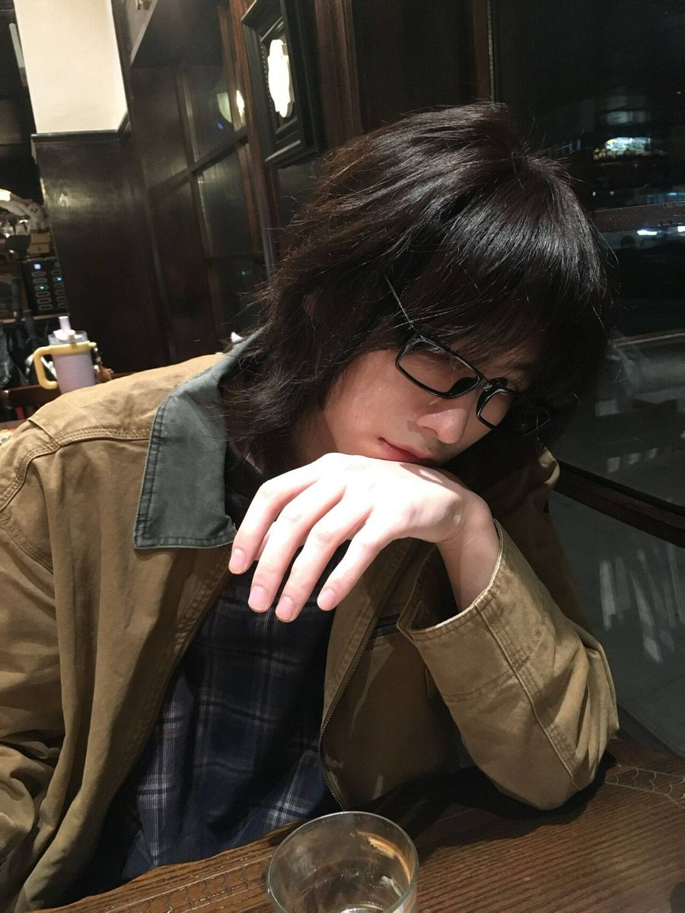

Accelerator🇦🇺
@HanQWQ457437
其实我特别喜欢长发男 别人说他们颓废我却觉得很好，好想和他在新宿天桥抽烟发呆 看他用带刺青的指尖弹落烟灰 听他抱怨地下乐队演出时键盘手又搞砸了副歌 我会把他断弦的吉他画满卡通小人 陪他通宵拼装残缺的机甲模型直到烟蒂堆满烟灰缸 用拍立得来拍下他每套穿搭，把相片钉在出租房发霉的墙角 就算他突然在梅雨季的清晨发丢掉所有yao瓶 我也会撬开便利店的啤酒罐 让泡沫顺着我们交缠的刺青往下流 他们说这是自sha式的恋爱，可互相咬的痛感就像电极戳进灵魂 当他用烧红的烟头烙下烙印时 我甚至觉得那片灼伤都是猩红的婚戒
图片是我朋友喵
